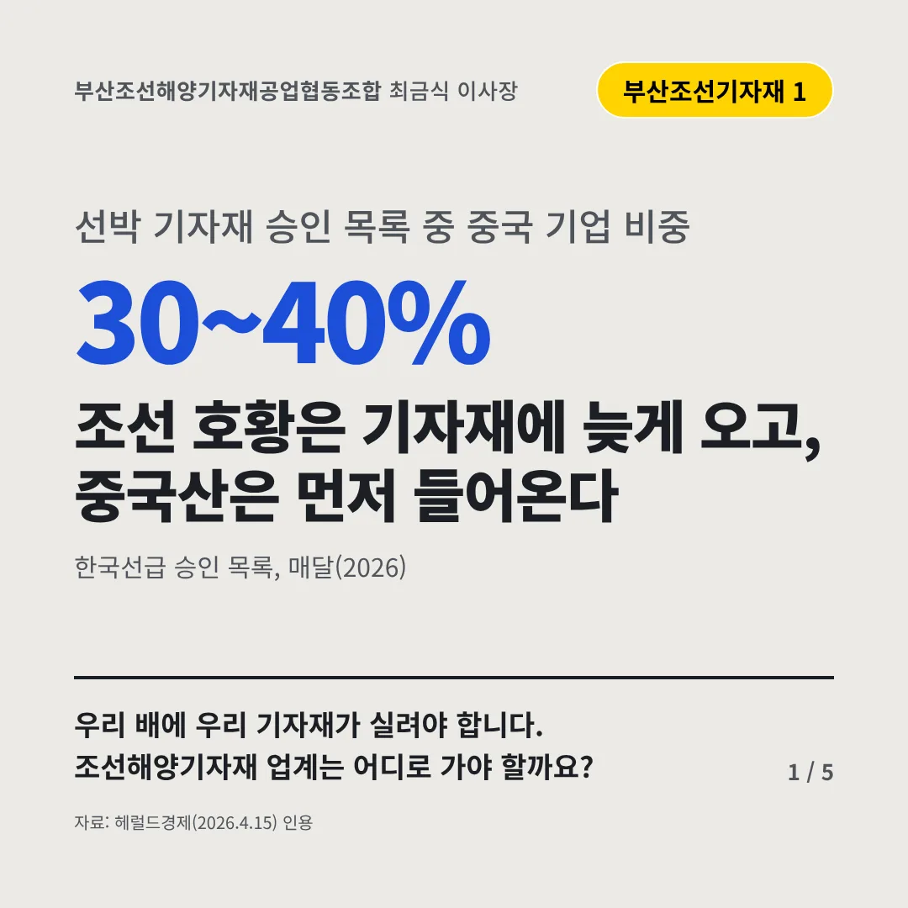
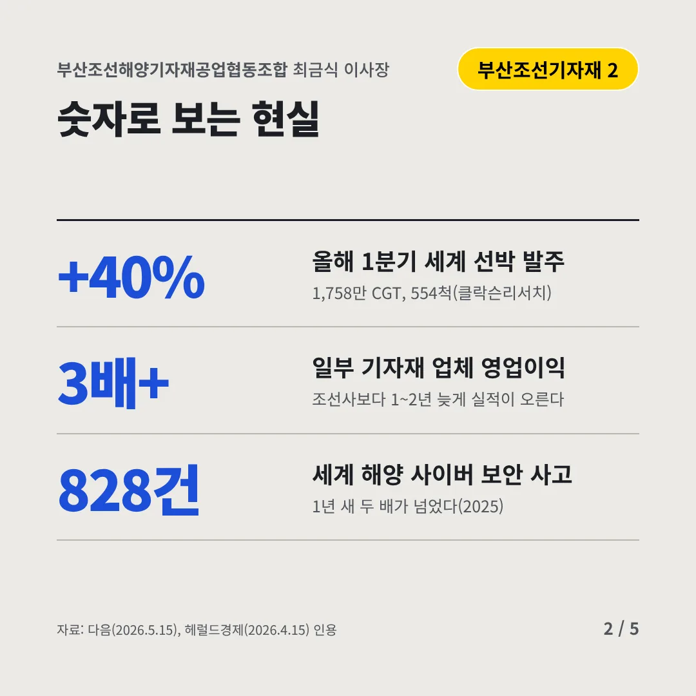
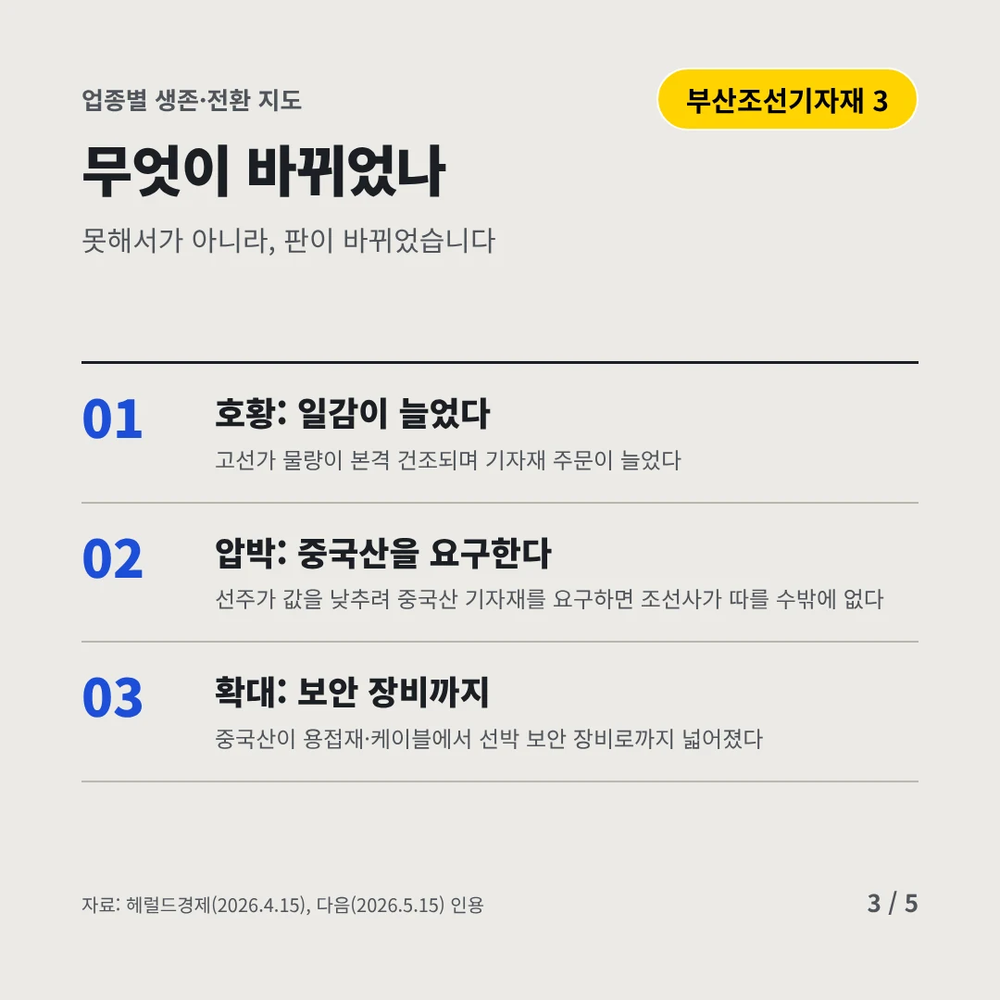
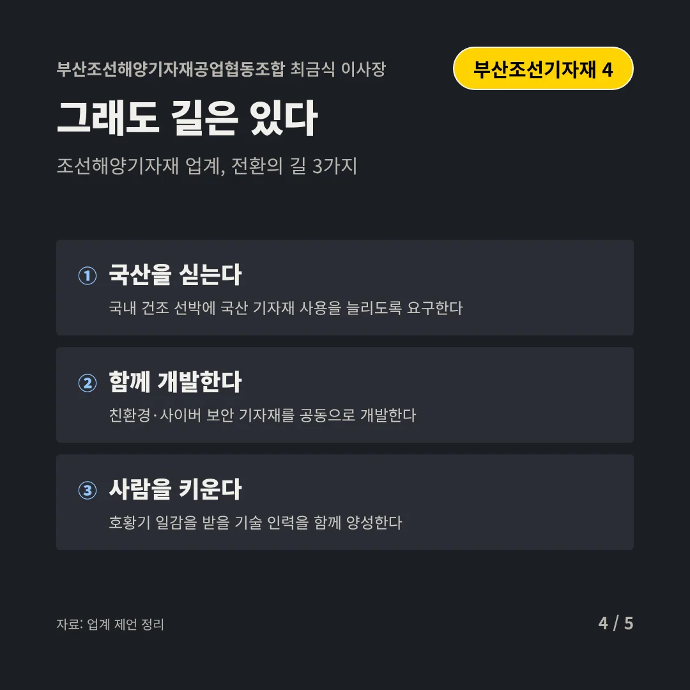
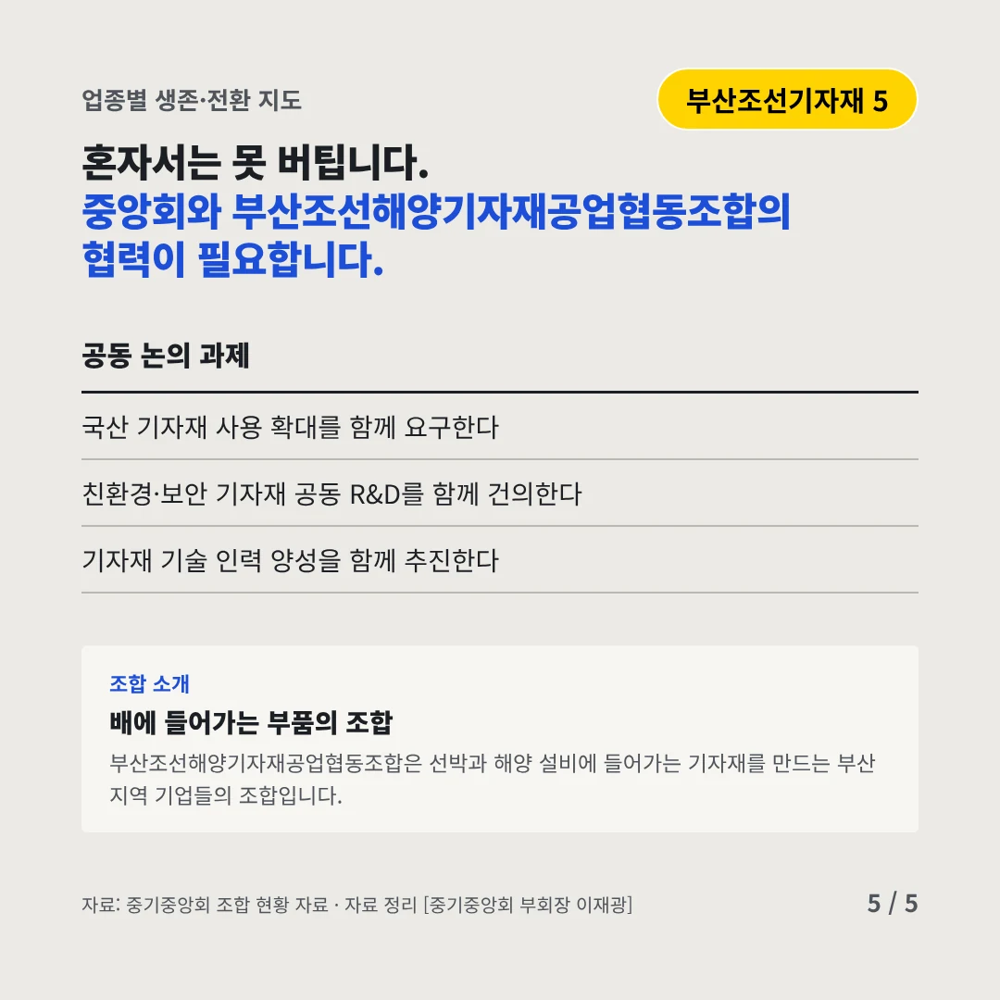
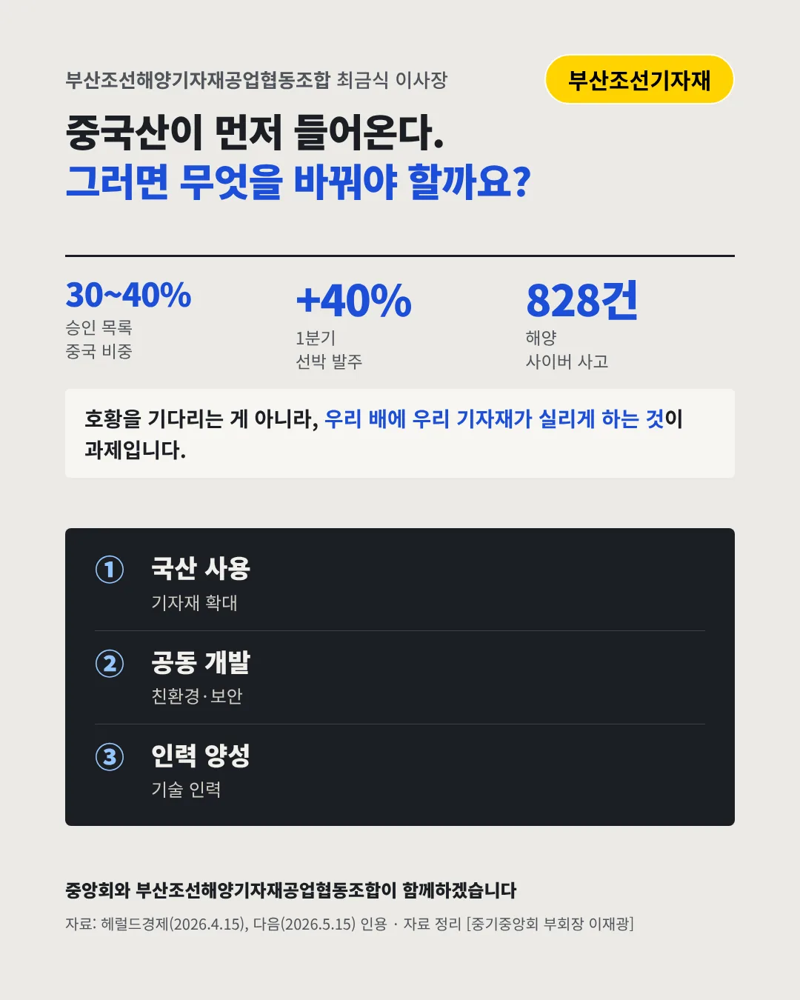

부산조선해양기자재공업협동조합최금식 이사장
조선 호황은 기자재에 늦게 오고, 중국산은 먼저 들어온다
30~40% 선박 기자재 승인 목록 중 중국 기업 비중






우리 배에 우리 기자재가 실려야 합니다. 조선해양기자재 업계는 어디로 가야 할까요?
숫자로 보는 현실
- +40%올해 1분기 세계 선박 발주1,758만 CGT, 554척(클락슨리서치)
- 3배+일부 기자재 업체 영업이익조선사보다 1~2년 늦게 실적이 오른다
- 828건세계 해양 사이버 보안 사고1년 새 두 배가 넘었다(2025)
무엇이 바뀌었나
- 호황: 일감이 늘었다고선가 물량이 본격 건조되며 기자재 주문이 늘었다
- 압박: 중국산을 요구한다선주가 값을 낮추려 중국산 기자재를 요구하면 조선사가 따를 수밖에 없다
- 확대: 보안 장비까지중국산이 용접재·케이블에서 선박 보안 장비로까지 넓어졌다
그래도 길은 있다
- 국산을 싣는다국내 건조 선박에 국산 기자재 사용을 늘리도록 요구한다
- 함께 개발한다친환경·사이버 보안 기자재를 공동으로 개발한다
- 사람을 키운다호황기 일감을 받을 기술 인력을 함께 양성한다
한 장 요약

조합 소개
부산조선해양기자재공업협동조합은 선박과 해양 설비에 들어가는 기자재를 만드는 부산 지역 기업들의 조합입니다.
자료: 헤럴드경제(2026.4.15), 다음(2026.5.15)